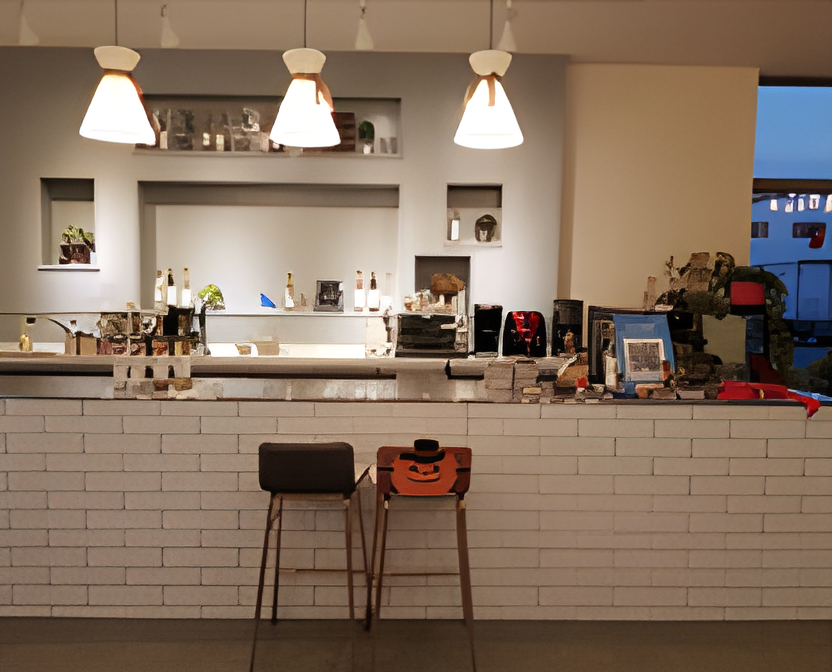

좋은술은 전통적인 양조 기법을 재해석하여 원료를 다섯 번에 나눠 담는 오양주로 잘 알려져있다.
오양주 천비향 생주, 3개월 발효에 3개월 숙성시킨 천비향 약주, 천비향 약주를 증류한 천비향 화주 등이 대표 상품이다.
청와대 만찬주이자 아세안 정상회담 만찬주로 선정된 천비향은 2018년, 2020년 대한민국 우리술 품평회 약주 부문 대저력을 인정받았다.
밀로 만든 전통 누룩을 사용하여 첨가물 없이 곡물의 순수한 발효향과 맛을 추구한다.
추천 메뉴
주저리에서 추천하는 이달의 청주
★★★★★
청화대 만찬 식전주
천비향 500ml
49,000원
주종 | 약주
용량 | 500ml
도수 | 16%
지역 | 경기도 평택시
양조장 | 좋은술
원재료 | 쌀(평택산 100%), 정제수, 누룩(국내산), 밀함유
유통기한 | 제품에 별도 표시
보관법 | 10ºC 이하에서 냉장보관하세요.
★★★★
김해김씨 명가명주
청명주17 750ml
38,000원
주종 | 청주
용량 | 375ml
도수 | 17%
지역 | 충청북도 충주시
양조장 | 중원당
원재료 | 국내산 찹쌀, 국내산 누룩, 국내산 소백분
유통기한 | 병입일로부터 6개월
보관법 | 10ºC 이하에서 냉장보관하세요.
★★★★
감사한 마음을 전하는 술
감사블루 14% 375ml
13,000원
주종 | 살균약주
용량 | 375ml
도수 | 14%
지역 | 경기도 용인
양조장 | 술샘
원재료 | 쌀(국내산 경기미),효모, 국(누룩, 국내산), 국(조효소제, 국내산), 정제수
유통기한 | 제조일로부터 2년
보관법 | 서늘한 곳에 보관하세요.
★★★☆
백스피릿 바로 그 술
복단지 14% 350ml
19,000원
주종 | 약주
용량 | 350ml
도수 | 14%
지역 | 경기도 여주
양조장 | 술아원
원재료 | 쌀(경기미), 정제수, 복분자(국내산), 누룩(국내산)
유통기한 | 제조일로부터 90일
보관법 | 10ºC 이하에서 냉장보관하세요.
introduction of brewery
양조장별 제품소개
경기도 평택시 오성면 숙성뜰길 108
(주)좋은술 바로가기
대표술
천비향

(주)좋은술
경기도 처인구 양지면 죽양대로 2298-1
(주)술샘 바로가기
(주)술샘
술샘은 "발효 전통을 이어가는 먹거리"라는 모토로 자연발효를 기초로 한 누룩부터 전통주, 천연 발효식초를 생산하는 전통 발효 식품 브랜드
시장의 요구에 맞춰 술샘은 고문헌에 나오는 이화주를 개발하고, 경기농업기술원과 기색깔 고운 막걸리도자라는 아이처럼 술샘도 그렇품평회에서 202017년에는 맑은 술 감사로 우수미르로 대통령상까지 받았다.
대표술

감사
충남 서천군 한산면 충절로 1118
한산소곡주 바로가기
대표술
한산소곡주
한산소곡주
맛이 달콤하면서도 도수가 높아 한 모금, 두 모금 마시다 보면 자신도 모르게 취해 일어나지 못해 앉은뱅이가 된다는 술이 소곡주다.
우희열 명인의 한산소곡주는 1979년 전통주 중 최초로 지역 무형문화재(충남 무형문화재 제 3호)로 지정되었고, 1999년에 농림축산식품부지정 식품명인 제 19호로 지정되었다.
현재 한산소곡주는 1대 김영신에서 며느리 우희열, 손자 나장연으로 이어지고 있다. 소곡주는 서천에서 나는 찹쌀과 직접 만든 누룩을 사용하며, 화학 첨가물없이 들국화, 메주콩, 생강, 고추 등의 재료를 넣고 자연 발효 기법에 따라 명품 술을 만든다.
충북 청주시 청원구 내수읍 풍정1길8-4
풍정사계 바로가기
풍정사계
풍정사계는 전통 방식의 양조를 고집한다. 가장 상징적인 전통 재료는 누룩이다.
제1제조장 옥상에서 누룩을 띄우는데, 온도와 습도의 관리가 여름에만 가능하므로 1년 사용할 누룩을 여름에 한꺼번에 만든다. 누룩은 밀과 녹두로 만든 향온곡을 사용한다.화려하지는 않지만 담백하고 중후한 매력을 지닌 맛이 특징이다.
2016년 대한민국 우리술 품평회에서 약주 춘, 소주 동이 최우수상, 2017년에는 약주 춘으로 대상을 받았다.
대표술
풍정사계